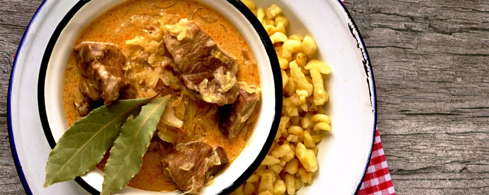
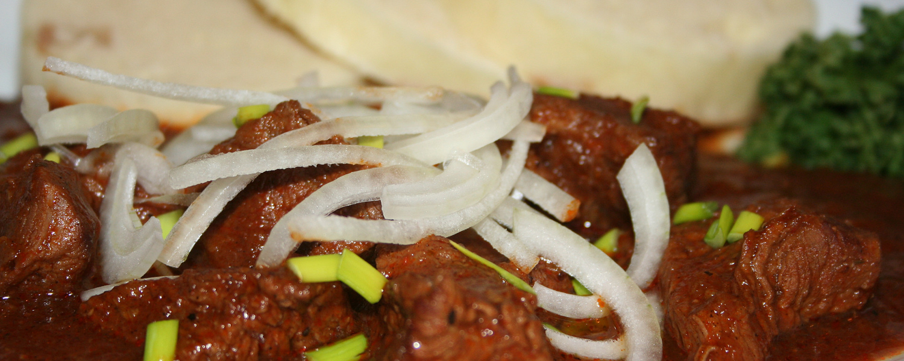
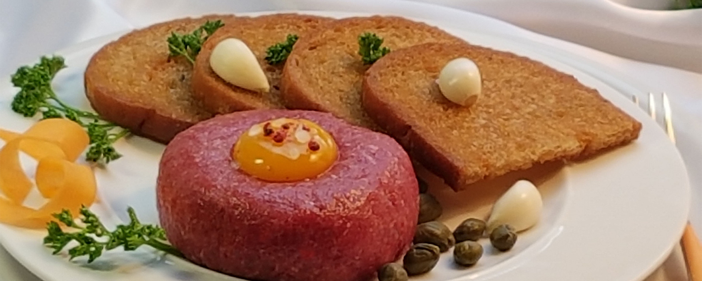

Chata U Uhelných Dolů
Ubytování
Restaurace
Kontakty

Skvělé a Chutné klasiky
Klasická česká kuchyně pečlivě uvařena
s láskou a pivem

Skvělé a Chutné klasiky
Klasická česká kuchyně pečlivě uvařena
s láskou a pivem

Skvělé a Chutné klasiky
Klasická česká kuchyně pečlivě uvařena
s láskou a pivem
Menu
Pondělí
Snídaně: Domácí lívance s ovocem a tvarohem
Oběd: Smažený vepřový řízek, bramborový salát, kyselé okurky
Večeře: Česnečka (česneková polévka) s opečeným chlebem
Úterý
Snídaně: Ovocový jogurt s medem a oříšky
Oběd: Gulášová polévka s hovězím masem, knedlík
Večeře: Zapečený bramborový koláč s houbami a smetanovým těstem
Středa
Snídaně: Chléb s máslem a domácím jahodovým džemem
Oběd: Svíčková na smetaně s houskovým knedlíkem, brusinková omáčka
Večeře: Pečená krůta s bramborovým noky a červeným zelím
Čtvrtek
Snídaně: Klasická omeleta s bylinkami a sýrem
Oběd: Bramborová polévka se hříbky, chléb
Večeře: Segedínský guláš s houskovým knedlíkem
Pátek
Snídaně: Domácí müsli s jogurtem a čerstvým ovocem
Oběd: Rybí polévka s kroupami, citronem a petrželí
Večeře: Selská pečeně se smaženými bramborami a okurkovým salátem
Sobota
Snídaně: Klasický český chléb se šunkou a sýrem
Oběd: Kulajda (houbová polévka) s vejcem, škvarky a koprem, chléb
Tatarák z hovězího masa s opečeným chlebem
Neděle
Snídaně: Cerálie s mlíkem
Oběd: Smažený květák s bramobrem a tatarkou
Večeře: Halušky se slaninou a zelím
Nápoje
Alkoholické
Točené pivo
Jagermeister
Červené víno
Vodka
Nealkoholické
Kofola Točená
Ovocný Džus
Perlivá voda